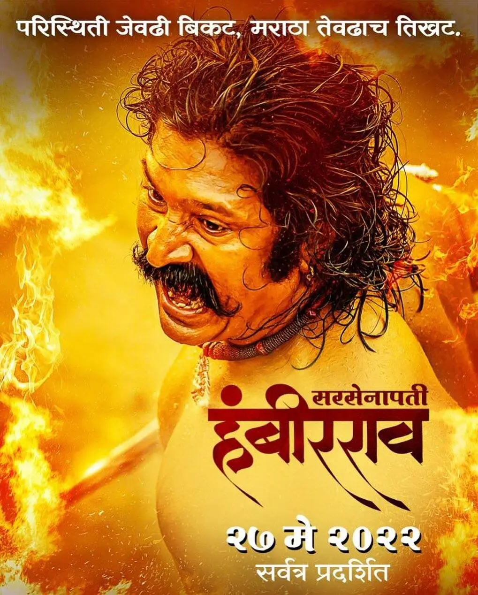
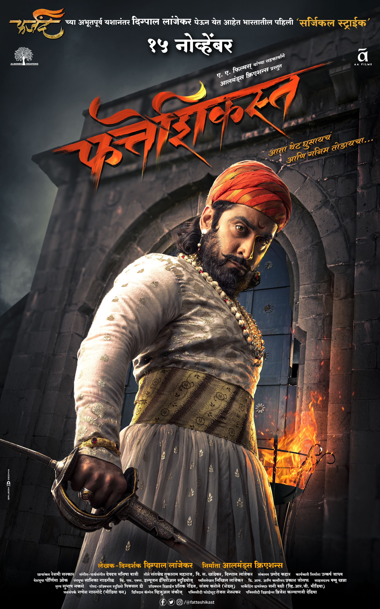
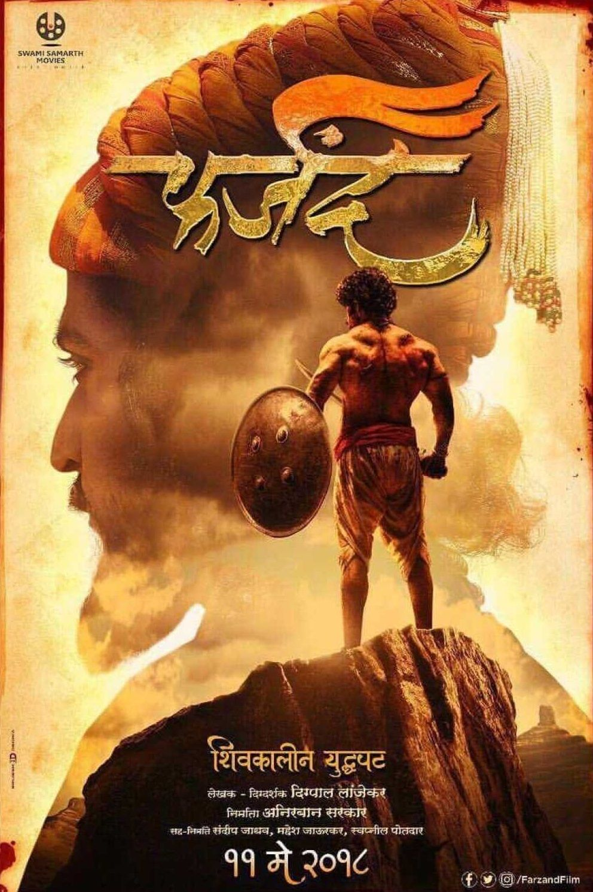
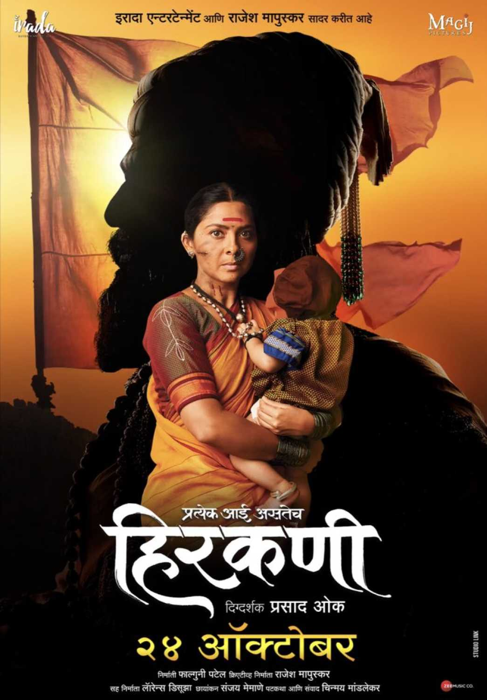
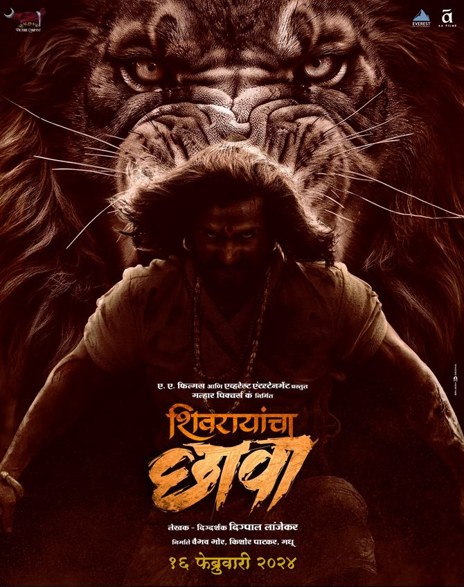
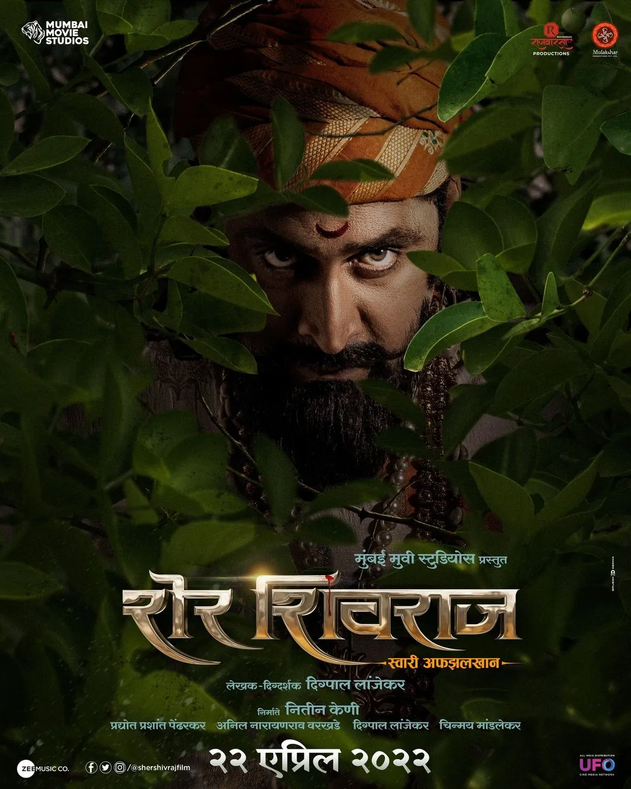
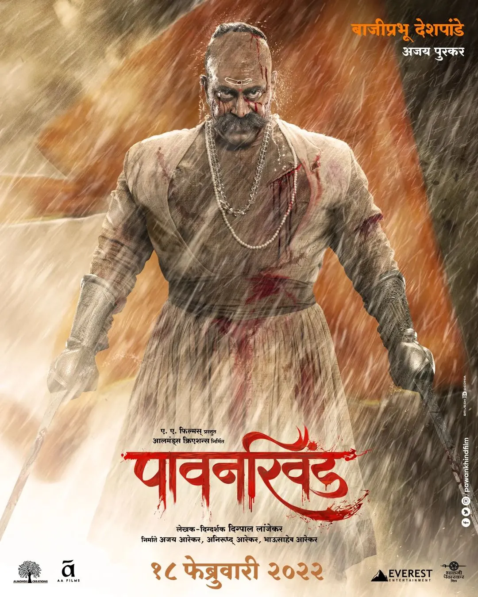
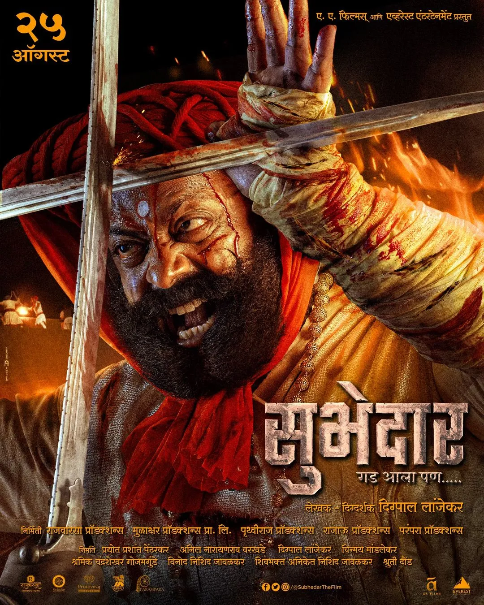

सरसेनापती हंबीरराव
Overview
"मराठा योद्धा हंसाजी मोहिते यांच्यावर आधारित, ज्यांना नंतर सरनोबत हंबीरराव ही पदवी देण्यात आली, हा चित्रपट छत्रपती शिवाजी महाराजांच्या सैन्याचा सेनापती म्हणून त्यांचे जीवन चित्रित करतो."

फतेशिकस्त
Overview
"शायस्ताखानाच्या हातून पुण्यातील लोकांवर होणारे अत्याचार संपवण्यासाठी छत्रपती शिवाजी महाराजांनी आक्रमणाची योजना आखली."

फर्जंद
Overview
"फर्जंद योद्धा कोंडाजी फर्जंद यांच्या कथेचे अनुसरण करतो, ज्याने 60 योद्धांसह शत्रूच्या 2500 सैनिकांचा पराभव करून 1673 मध्ये केवळ साडेतीन तासात पन्हाळा किल्ला जिंकला होता."

हिरकणी
Overview
"रायगडचे दरवाजे दिवसभर बंद झाल्यानंतर, हिरकणीने आपल्या बाळाला घरी परतण्यासाठी एक उंच कडा खाली करण्याचा निर्णय घेतला."

शिवरायांचा छावा
Overview
"मराठा साम्राज्याचे दुसरे छत्रपती संभाजी महाराज, ज्यांना सामान्यतः शंभूराजे म्हणून ओळखले जाते, त्यांनी १६८१ ते १६८९ या काळात राज्य केले आणि हा चित्रपटाचा विषय आहे. शिवाजी, मराठा साम्राज्याचे संस्थापक, त्यांना त्यांचा ज्येष्ठ पुत्र होता."

शेर शिवराज
Overview
"छत्रपती शिवाजी महाराज आपल्या सर्वात मोठ्या प्रतिस्पर्ध्यांपैकी एक अफझलखानचा सामना करण्यासाठी आपली बुद्धी, जोम आणि धैर्य वापरतात आणि प्रतापगडाच्या युद्धात विजयी होतात."

पावनखिंड
Overview
"1660 च्या एका भयानक रात्री, छत्रपती शिवाजी महाराजांना पन्हाळा किल्ल्यात विजापूर सल्तनतने कोपऱ्यात ठेवलेले दिसते. मात्र, मराठा सेनापती आपला नेता वाचवण्यासाठी जीव धोक्यात घालतात."
